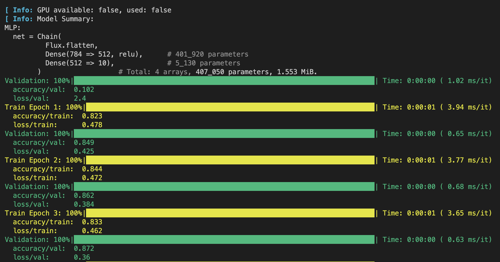

Tsunami.jl

A high-level deep learning framework for the Julia language that helps you focus and organize the relevant part of your code while removing the boilerplate.
Tsunami is built on top of Flux.jl and it is heavily inspired by pytorch-lightning.
Installation
Install Tsunami with
pkg> add TsunamiFeatures
- Use
fit!instead of implementing a training loop. - Logging (tensorboard).
- Checkpoints (save and resume training).
- GPU movement.
Usage Examples
Define your model subtyping the FluxModule abstract type, implement a few required methods, then let the Trainer train the model on your dataset with fit!. Tsunami will handle all of the boilerplate (training loop, logging, gpu movement, validation, ...).
using Flux, Optimisers, Statistics, Tsunami, HuggingFaceDatasets, ImageCore
using MLUtils: DataLoader, flatten, mapobs
## Define the model
mutable struct MLP <: FluxModule
net
end
MLP() = MLP(Chain(flatten,
Dense(28^2 => 512, relu),
Dense(512 => 10)))
(model::MLP)(x) = model.net(x)
function loss_and_accuracy(model::MLP, batch)
x, y = batch
ŷ = model(x)
return Flux.logitcrossentropy(ŷ, y), Tsunami.accuracy(ŷ, y)
end
function Tsunami.train_step(model::MLP, trainer, batch)
loss, acc = loss_and_accuracy(model, batch)
Tsunami.log(trainer, "loss/train", loss, prog_bar=true)
Tsunami.log(trainer, "accuracy/train", acc, prog_bar=true)
return loss
end
function Tsunami.val_step(model::MLP, trainer, batch)
loss, acc = loss_and_accuracy(model, batch)
Tsunami.log(trainer, "loss/val", loss)
Tsunami.log(trainer, "accuracy/val", acc)
end
Tsunami.configure_optimisers(model::MLP, trainer) =
Optimisers.setup(Optimisers.AdamW(1e-3), model)
## Prepare the data
function mnist_transform(batch)
image = ImageCore.channelview.(batch["image"])
image = Flux.batch(image) ./ 255f0
label = Flux.onehotbatch(batch["label"], 0:9)
return (; image, label)
end
train_data = load_dataset("fashion_mnist", split="train").with_format("julia")
train_data = mapobs(mnist_transform, train_data)[:]
train_loader = DataLoader(train_data, batchsize=128, shuffle=true)
test_data = load_dataset("fashion_mnist", split="test").with_format("julia")
test_data = mapobs(mnist_transform, test_data)[:]
test_loader = DataLoader(test_data, batchsize=128)
## Create and train the model
model = MLP()
trainer = Trainer(max_epochs=5)
Tsunami.fit!(model, trainer, train_loader, test_loader)
See the folder examples/ for usage examples.